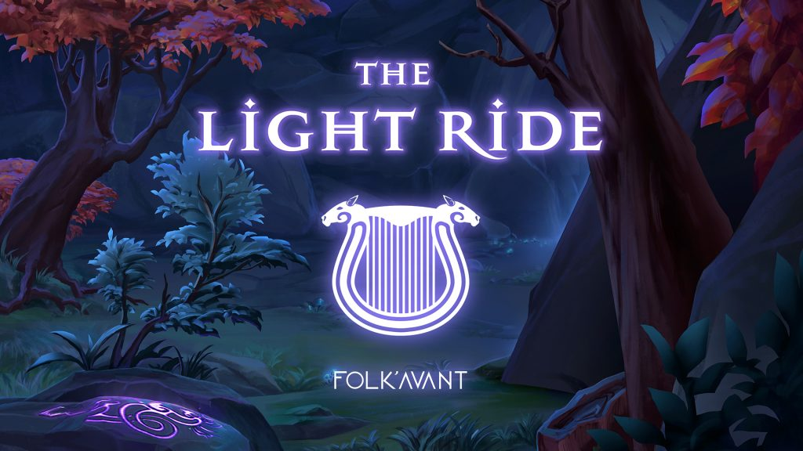

A Kalevala, vagy „Kalewala” egy eposz, amelyet a finn orvos, Elias Lönnrot írt 1835-ben. A mű, amelyet ma Finnország nemzeti eposzának tekintenek, egy Väinämöinen nevű szereplőt állít a középpontba. A finn népmeséi gyakran sámánként, varázslóként vagy félistenként ábrázolják Väinämöinent. Úgy gondolják, hogy ez a karakter ihlette J. R. R. Tolkien: A Gyűrűk Ura című művében Gandalfot. A Kalevalában Väinämöinen megöl egy hatalmas csukát. Az állkapcsából elkészíti az első kantelét – egy balti pszaltérionhoz hasonló pengetős húros hangszert.
A lant és – tágabb értelemben – a csembaló furcsa rokona, a kantele kissé különcnek számít az európai húros hangszerek fejlődéstörténetében. Bár a kantele mélyen gyökerezik a finn néphagyományban – a Star Stable Online rajongói számára –, gyökerei ennél is mélyebbre nyúlnak. A költeményben Väinämöinen az ördög herélt lovának szőréből húrozza fel a kantelét. A kisebb, hagyományosabb kanteléknek csak öt húruk lehet, míg a koncertkanteléknek akár 40 is. Mivel a mitikus lovakat nehéz beszerezni, a modern zenészek lószőrrel beérik.
Kik azok a Folk’ Avant?
185 évvel azután, hogy a világ először megismerte a kantele legendás eredetét, egy skandináv népzenei együttes áll az élén annak mai újjáéledésének. A 2014-ben alapított Folk’ Avant egy rendkívül tehetséges trió, amelynek tagjai Anna Wikenius, Maija Pokela és Anna Rubinsztein.
A zenekar egyetlen finn tagja, Pokela kantele-játékával tiszteleg öröksége előtt, kamatoztatva a Helsinki Uniarts nagyra becsült Sibelius Akadémiáján szerzett népzenei alap- és mesterdiplomáját. Rubinsztein hegedűjével színesíti a zenét, míg a két „Anna” énekkel csatlakozik hozzájuk!
Zenéjük a grandiózus kifejezésmód, a finom dallamok és a nyughatatlan lelkesedés játékos és érdekes egyensúlyát mutatja be. Hagyományos skandináv gyökereik gazdag és magával ragadó árnyalatokat kölcsönöznek minden fellépésüknek. Egy-egy dal egyszerre hangzik melegnek, mégis távoli; hangulatosnak, mégis reményteljesnek; energikusnak, mégis nosztalgikusnak.
A Folk’ Avant Jorvikon és azon túl is megosztotta a hagyományos és kortárs ritmusok egyedülálló keverékét! A zenekar fellépett a legnagyobb svéd és finn fesztiválokon, turnézott Spanyolországban és Moszkvában.
Legújabb kislemezük, a The Light Ride, egy új generációt ismertet meg az északi népzene eklektikus hangzásvilágával. A Star Stable Entertainmenttel együttműködve a zenekar valóban új kontextusba helyezte a kantelét a kortárs közönség számára.

Szeretnél többet megtudni a Folk’ Avantról? Látogass el a weboldalukra!
Források:
Snodgrass, Mary Ellen: Encyclopedia of the Literature of Empire. Facts On File, United States, 2010, 161–162. o. Tëmkin, Ilya (2004): Evolution of the Baltic psaltery: a case for phyloorganology? Galpin Society Journal, 57, 219–230.